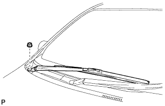
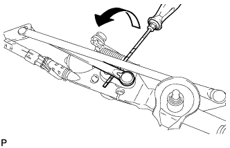
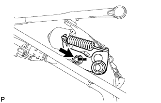

Windshield Wiper Motor Assembly Removal |
| 1. Disconnect Battery Negative Terminal |
)| 2. Remove Front Wiper Arm Head Cap |
 |
Remove the 2 front wiper arm head caps.
| 3. Remove Front Wiper Arm & Blade Assembly RH |
 |
Remove the front wiper arm nut and front wiper arm & blade assembly RH.
| 4. Remove Front Wiper Arm & Blade Assembly LH |
 |
Remove the front wiper arm nut and front wiper arm & blade assembly LH.
| 5. Remove Hood to Cowl Top Seal |
 |
Disengage the 7 clips and remove the hood to cowl top seal.
| 6. Remove Front Side Panel Protector NO.1 LH |
 |
Disengage the pin and remove front side panel protector NO.1 LH.
| 7. Remove Cowl Top Ventilator Louver LH |
 |
Disengage the 11 claws and remove the cowl top ventilator louver LH as shown in the illustration.
| 8. Remove Front Side Panel Protector NO.1 RH |
 |
Disengage the pin and remove front side panel protector NO.1 RH.
| 9. Remove Cowl Top Ventilator Louver RH |
 |
Disengage the 5 claws and remove the cowl top ventilator louver RH as shown in the illustration.
| 10. Remove Windshield Wiper Motor & Link Assembly |
 |
Remove the 2 bolts and disconnect the windshield wiper motor & link assembly.
Disconnect the connector and clamp, and remove the windshield wiper motor & link assembly as shown in the illustration.
| 11. Remove Windshield Wiper Motor Assembly |
 |
Using a screwdriver with its tip wrapped in protective tape, disconnect the rod of the windshield wiper link assembly from the crank arm pivot of the windshield wiper motor assembly as shown in the illustration.
 |
Put matchmarks on the crank arm assembly of the front wiper link assembly and the windshield wiper motor assembly as shown in the illustration.
Remove the nut and separate the crank arm assembly of the front wiper link assembly from the windshield wiper motor assembly.
 |
Disconnect the connector.
Remove the 3 bolts and remove the windshield wiper motor assembly from the front wiper link assembly.